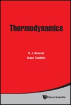
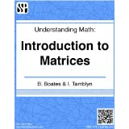

|
Isaac Tamblyn is a Research Officer at the National Research Council of Canada and is an Affiliate Researcher with the Waterloo Institute for Complexity and Innovation. He holds Adjunct status in the Department of Physics at the University of Ottawa, Electrical and Computer Engineering at the University of Waterloo, and Physics & CS at the University of Ontario Institute of Technology. He conducted postdoctoral studies at Lawrence Livermore National Laboratory and Lawrence Berkeley Laboratory (NSERC Postdoctoral Fellow). He earned his PhD in Physics from Dalhousie University in 2009. During his doctoral studies, he was a Killam Scholar and spent time as a visiting student at UC Berkeley and the Carnegie Institution of Washington. His current research interests are focused on application of A.I. and deep learning to problems in nanoscience, in particular materials and processes related to renewable energy. For more information please see Research Areas |
Teaching | Books | Publications
Books
|
 |
|
 |
Full publication list available here
Previous Experience
- Postdoctoral Fellow, Physical and Life Sciences Directorate, Lawrence Livermore National Laboratory
- Postdoctoral Fellow, Molecular Foundry, Lawrence Berkeley National Laboratory
- Visiting student, Department of Physics, UC-Berkeley
- Visiting student, Quantum Simulation Group, Lawrence Livermore National Laboratory
- Visiting student, Geophysical Laboratory, Carnegie Institution of Washington, D.C